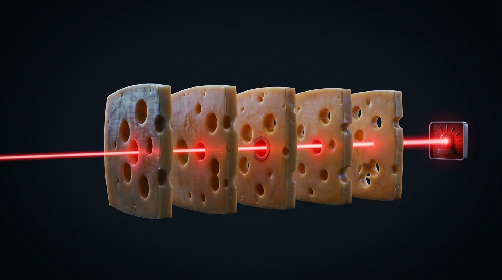
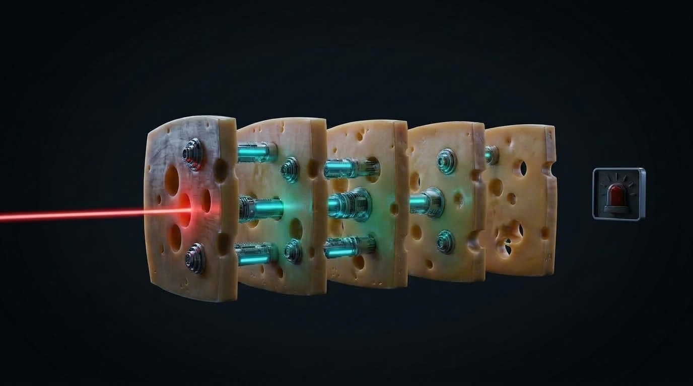
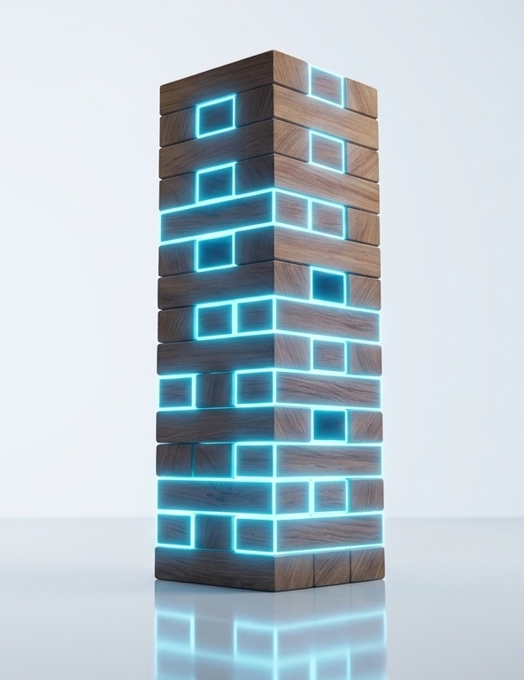

Agentic Transformation
for India’s Energy Giants
Operationalizing AI from the control room to the boardroom.
In energy, there are no
low-consequence mistakes.
Oil & gas is an unforgiving, high-capital business. Multi-crore losses rarely stem from visible catastrophes—they leak quietly every single day through routine operational friction across siloed disciplines.
It doesn't vanish in catastrophes. It leaks quietly through routine operational friction: unmonitored human handovers.
A major incident is never a single failure.
It’s the quiet alignment of invisible gaps.
Rooted in Prof. James Reason’s System Safety model: disasters in high-consequence operations rarely stem from a single colossal error, but from routine friction and unmonitored seams lining up across siloed disciplines.


Before selecting a technology, energy operations demand five non-negotiable engineering criteria for autonomous agents.
In oil and gas, the last barrier is a person.
Four in ten have already gone. The rest retire inside a decade.
On the last slide, three latent gaps aligned into one stuck drillstring. Each of them had a defence, and in every case that defence was somebody's memory — of a 2004 well, of how that tool behaves, of why you telephone at three in the morning rather than send an email. None of it is written down. None of it appears on a barrier diagram. And it is walking out of the building.
The art is not in the reports. Critical judgement was never captured in institutional records or IT systems. It lives in the minds of the stalwarts, and nowhere else.
A massive crew change is under way. Lifetimes of compounded experience walk out permanently, every year — and the departure rate is accelerating, not easing.
Systems store explicit data, not tacit experience. No mechanism captures the judgement before it is gone. The next generation will inherit the systems. They will not inherit the judgement.
Not a system.
Oil & gas is half science, half art — and the art leaves with the person doing it.
What you know can now outlast your tenure. That has never been true before. The window is not the years until the last expert retires — it is the years while they are still here to teach the system what they know.
The defence therefore cannot be a person. Before selecting a technology, energy operations demand five non-negotiable engineering criteria for autonomous agents.
The 5 Non-Negotiable Criteria of the Agent →To seal micro-vulnerabilities, you need targeted solutions.
The five non-negotiable solution criteria for mission-critical operations.
Before selecting a technology, energy operations must define the architectural requisites of defense—permanently eliminating friction and latent risk across siloed disciplines without endangering high-consequence physical assets:
Targets the exact workflow where the vulnerability lives.
Triggers instantaneously on live operational data 24/7 without human delay.
Understands domain context, and cross-discipline data.
Centrally controlled, with identity and access management, with an immutable audit trail.
Grounded in deterministic physics and exact mathematical solvers.
These five non-negotiable characteristics separate mission-critical enterprise infrastructure from consumer chatbots—providing deterministic physical calculations, strict human oversight, and zero operational hallucination.
An intelligent microservice that coexists with your monoliths to create an agentic organization.
AI Agent: The Intelligent Microservice
The future of enterprise workflows is in the coexistence of software monoliths and intelligent microservices.
Targets the exact seam where the operational vulnerability lives.
Triggers instantaneously on live operational data, guarding handovers 24/7 without delay.
Understands domain context, and cross-discipline data.
Centrally controlled, immutable audit trail, and non-negotiable Human-in-the-Loop veto.
Grounded in physical science and exact mathematical solvers—zero generative guesswork.
Structural Resilience of an Agentic Organisation
Operational vulnerabilities exist across both workflows and workforce. AI Agents eliminate these operational gaps to build a structurally resilient organization.
Gaps across disconnected workflows and a stretched workforce leave mission-critical processes unmonitored and vulnerable to friction.

AI Agents augment both workforce and workflows—bridging operational gaps with 24/7 autonomous monitoring and exact solvers.